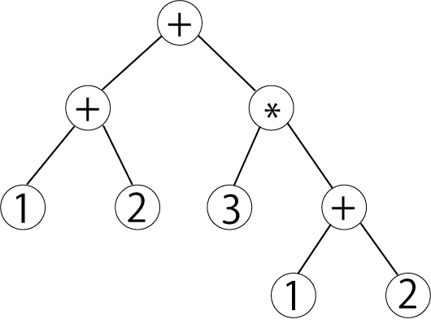

プログラミング言語論および演習 (演習前半)
** 電卓 **
Table of Contents
木構造 (二分木)
- 根 (Root)
- 未作成
- 節 (Node)
- 未作成
- 葉 (Leaf)
- 未作成
二分木を用いた数式の表現
- (1+2)+(3*(1+2)) の表現

- Scala による実装
package recPractice object CalcStructure { /* * Tree クラス * element 根ノードを表す． * left 左の部分木 * right 右の部分木 */ abstract class Tree { val op: String val left: Tree val right: Tree } /* * Node クラス */ case class Node(op: String, left: Tree, right: Tree) extends Tree /* * Leaf クラス */ case class Leaf(op: String) extends Tree { val left: Tree = null val right: Tree = null } /* * Tree の例 ((1+2)+(3*(1+2))) * ex1 1+2 * ex2 3*(1+2) * ex3 (1+2)+(3*(1+2)) */ val ex1: Tree = new Node("+", new Leaf("1"), new Leaf("2")) val ex2: Tree = new Node("*", new Leaf("3"), ex1) val ex3: Tree = new Node("+", ex1, ex2) }
再帰プログラミングを使って以下のメソッドを実装してみよう
- toString 関数
- (入力) Tree型の tree
- (出力) String. 数式を表した tree の構造を括弧をつけて文字列にしたもの
- (出力例) worksheet の出力例を以下に記載する
val ex1: Tree = new Node("+", new Leaf("1"), new Leaf("2")) val ex2: Tree = new Node("*", new Leaf("3"), ex1) val ex3: Tree = new Node("+", ex1, ex2) toString(ex1) //> res0: String = (1+2) toString(ex2) //> res1: String = (3*(1+2)) toString(ex3) //> res2: String = ((1+2)+(3*(1+2)))
- (入力) Tree型の tree
- calc 関数
- (入力) Tree型の tree
- (出力) Int. 数式の演算結果を返す
- (出力例) worksheet の出力例を以下に記載する
val ex1: Tree = new Node("+", new Leaf("1"), new Leaf("2")) val ex2: Tree = new Node("*", new Leaf("3"), ex1) val ex3: Tree = new Node("+", ex1, ex2) calc(ex1) //> res3: Int = 3 calc(ex2) //> res4: Int = 9 calc(ex3) //> res5: Int = 12
- (入力) Tree型の tree
解答例
1: def isNumber(str: String): Boolean = str match { 2: case "*" | "+" => false 3: case _ => true 4: } //> isNumber: (str: String)Boolean 5: 6: def toString(tree: Tree): String = tree match { 7: case _: Leaf => tree.op 8: case _: Node => { 9: if (isNumber(tree.op)) " " + tree.op + " " 10: else 11: Seq(toString(tree.left), toString(tree.right)).mkString("(",tree.op,")") 12: } 13: } //> toString: (tree: recPractice.CalcStructure.Tree)String 14: 15: toString(ex1) //> res0: String = (1+2) 16: toString(ex2) //> res1: String = (3*(1+2)) 17: toString(ex3) //> res2: String = ((1+2)+(3*(1+2))) 18: 19: def calc(tree: Tree): Int = tree match { 20: case _: Leaf => tree.op.toInt 21: case _: Node => { 22: if (isNumber(tree.op)) tree.op.toInt 23: else tree.op match { 24: case "*" => calc(tree.left) * calc(tree.right) 25: case "+" => calc(tree.left) + calc(tree.right) 26: } 27: } 28: } //> calc: (tree: recPractice.CalcStructure.Tree)Int 29: 30: calc(ex1) //> res3: Int = 3 31: calc(ex2) //> res4: Int = 9 32: calc(ex3) //> res5: Int = 12
補足資料
- mkString
- Scala ではmkStringを使うことでSeqやListなどから簡単にStringを生成することができる.
- 1引数のmkStringではデリミタを定義できる．
- 3引数のmkStringでは，開始文字列，デリミタ，終了文字列を定義できる．
scala> val list = List(2, 7, 1, 8) list: List[Int] = List(2, 7, 1, 8) scala> list.mkString(",") res0: String = 2,7,1,8 scala> list.mkString("--",",","++") res1: String = --2,7,1,8++
- match式
- match式は値に応じて処理を分岐させる．
- 単純に値が一致するかどうかだけでなく、パターンマッチングで色々な条件でマッチさせることが出来る。
- match式も式なので値を返すことができる．
- 整数値に応じて分岐するのmatch式 (以下，Scala Worksheet の出力)
val n = 3 //> n : Int = 3 n match { case 1 => "This is one." case 2 => "This is two." case 3 => "This is three." } //> res0: String = This is three.
- match式は値を返す.
val str = n match { case 1 => "This is one." case 2 => "This is two." case 3 => "This is three." } //> str : String = This is three. str //> res0: String = This is three.
- Tuple もマッチすることができる．記号 _ (アンダースコア) は任意のもの(ここでは任意の整数)にマッチする．
val pair1 = (1, 3) //> pair1 : (Int, Int) = (1,3) val pair2 = (2, 4) //> pair2 : (Int, Int) = (2,4) pair1 match { case (1, _) => "First element is one." case (_, 4) => "Second element is four." case (_, _) => "Others." } //> res0: String = First element is one. pair2 match { case (1, _) => "First element is one." case (_, 4) => "Second element is four." case (_, _) => "Others." } //> res0: String = Others.
- case の部分に変数を使うと，マッチしたときにその変数に値を入れてくれる．
val pair1 = (1, 3) //> pair1 : (Int, Int) = (1,3) val pair2 = (2, 4) //> pair2 : (Int, Int) = (2,4) val pair3 = (15, 999) //> pair3 : (Int, Int) = (15,999) pair1 match { case (m, n) => "First element is one." + "Second element is " + n case (m, 4) => "First element is " + m + " Second element is four." case (m, n) => "Others." + Seq(m, n).mkString("(",",",")") } //> res0: String = First element is one.Second element is 3 pair2 match { case (1, n) => "First element is one." + "Second element is " + n case (m, 4) => "First element is " + m + " Second element is four." case (m, n) => "Others." + Seq(m, n).mkString("(",",",")") } //> res1: String = First element is 2 Second element is four. pair3 match { case (1, n) => "First element is one." + "Second element is " + n case (m, 4) => "First element is " + m + " Second element is four." case (m, n) => "Others." + Seq(m, n).mkString("(",",",")") } //> res2: String = Others.(15,999)
- if 式を使ってガード条件を記述できる (=> の右側にif文を書くことはもちろんできる)．
val pair4 = (6, 7) //> pair4 : (Int, Int) = (6,7) val pair5 = (6, 6) //> pair5 : (Int, Int) = (6,6) pair4 match { case (m, n) if m == n => "First and second elemnts are the same." case (m, n) => "First and second elemnts are different." } //> res3: String = First and second elemnts are different. pair5 match { case (m, n) if m == n => "First and second elemnts are the same." case (m, n) => "First and second elemnts are different." } //> res4: String = First and second elemnts are the same.
チャレンジ問題
- 未作成